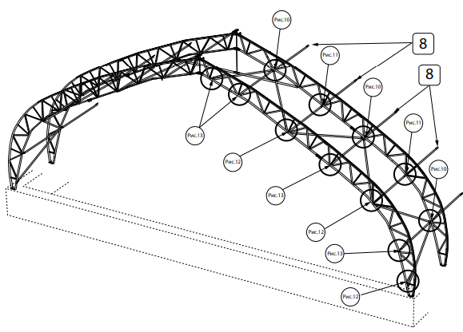

Наши теплицы
Мы производим ФИНСКИЕ теплицы Termorex в РОССИИ.
Данный конструктив теплицы разработан специально для выращивания сеянцев деревьев с ЗКС (закрытой корневой системой).
12×60 м — Termorex-S
250 000 сеянцев ЗКС (1 ротация)
Идеально подходит для небольших участков. Компактный размер и высокая эффективность.

{kind=link}
16,5×80 м — Termorex-M
500 000 сеянцев ЗКС (1 ротация)
Средний размер, отлично подходит для средних и крупных хозяйств, требует больше места.
{kind=link}
{kind=link}
Рассчитайте стоимость теплицы
Введите параметры вашей теплицы и узнайте примерную стоимость.
Примерная стоимость теплицы:
3 000 000 ₽
Наши Теплицы
Внедрение передовых технологий для повышения эффективности и экологичности.
Надежность
{kind=link}
Конструкции выполнены из качественной оцинкованной стали 3мм; «П» образный профиль, делает конструкцию прочной и очень надежной, особенно в заснеженных регионах.
Основные узлы

Фрамуги-1500 мм. Выполнены из 10мм поликарбоната премиального качества. Не подвержены к ультрафиолету и имеют высокие прочностные характеристики.
Дополнительная информация
Каркас теплицы выполнен из 3мм оцинкованной стали, выдерживает высокие нагрузки и устойчив к коррозии. Долговечен.
Поливочная рампа: в наши теплицы легко монтируется поливочная рампа любого производителя. Выбор остается за клиентом.
Ворота стандартного размера 3500х3500 мм. Имеют калитку 90х2000 для оперативного доступа человека. По желанию, размеры ворот могут быть индивидуальны для каждого проекта.
Стандартнная длина теплицы 80 метров и может быть увеличена до 120 метров в зависимости от проекта. Фундамент ленточный стандартный 300х400 мм. В зависимости от грунтов, фундамент может быть выполнен в виде ростверка. Пленка EVA долговечная, выдерживает сильные ветровые и снеговые нагрузки. Добавлены специальные морозостойкие добавки, до -40 так же эластична и до -80 сохраняет свои качества. Техническая зона в входной группе, организована для размещения необходимого оборудования а так же для комфортного засеивания.
Простота конструкции
{kind=link}
Конструкция разработана с учетом удобства установки и легкости в обслуживании, что делает теплицу доступной для широкого круга пользователей.
Сборка
{kind=link}
Сборка производится на земле при возведении требуется 3-4 человека и 1 автокран. Для правильной сборки теплицы разработана удобная и понятная инструкция
Дополнительная информация
Для выращивания сеянцев с закрытой корневой системой требуется технологичная, оборудованная правильной системой полива и вентиляцией теплица. Выбор типа теплицы и её технологичность являются одним из основных залогов успеха при выращивании сеянцев с ЗКС.
Грамотное расположение угла наклона стенки теплицы позволяет максимально выгодно для растений получать требуемый ультрафиолет, а также сводит к нулю разрывы во время снеговых осадков. Система наддува между слоями пленки позволяет не только не скапливаться осадкам, но и сохранить необходимое тепло.
Цена на теплицу на заказ от 300 000 рублей
Наша компания имеет собственное производство теплиц. Данный тип теплиц положительно зарекомендовал себя на протяжении более 20 лет. Существует два стандартных решения — 16,5×80 метров и 25×100 метров. Но имея собственное производство, мы имеем ряд преимуществ перед продавцами (перекупщиками), так как можем более гибко и индивидуально подходить под требования заказчика, выполняя заказы по индивидуальным размерам.
Пленка для теплиц
Выбор пленочного покрытия является одним из самых важных аспектов при строительстве теплицы. Качественная пленка — залог стабильного и здорового роста саженцев, правильного получения ультрафиолета, сохранения температурного баланса в теплице, а также снижение расходов на ремонтные работы за счёт долголетней службы EVA Patilux EVA D\AG (7-10 лет).
Более подробную информацию о пленке вы сможете найти на сайте www.PATILUX.ru или на внутренней вкладке о плёнке.
Купить теплицу для лесовосстановления
Когда речь идет о выращивании сеянцев в промышленных масштабах, правильный выбор теплицы — залог успешного проекта. Мы приглашаем вас открыть новую главу в сфере лесовосстановления с Био Инвест!
В чем заключается выгода?
- Собственное производство
- Комплексный подход
- Послепродажная поддержка
- Размеры по вашему желанию
- Долговечность и надежность
Гарантия качества
Мы гордимся тем, что каждая теплица проходит через наше собственное производство. Это обеспечивает высший стандарт качества, от выбора материалов до деталей конструкции. Приобретая у нас, вы получаете гарантию долговечности и эффективности.
От проектирования до эксплуатации
Наша компания предоставляет возможность взаимодействия с заказчиком на всех этапах проекта. Начиная с проектирования и строительства, и заканчивая поставкой оборудования и вводом объекта в эксплуатацию. Мы с вами на каждом шагу, гарантируя полное соответствие вашим ожиданиям.
Надежное сотрудничество
Наше взаимодействие не заканчивается с момента сдачи проекта. Мы предоставляем надежную послемонтажную поддержку, готовы ответить на ваши вопросы и решить любые возникшие проблемы. С нами ваш бизнес всегда под защитой.
Теплицы по вашим размерам
Мы понимаем, что каждый проект уникален. Независимо от того, строите ли вы большой комплекс для лесоразведения или занимаетесь восстановлением лесов, мы можем предложить решение, идеально соответствующее вашим требованиям.
Преимущества в каждой детали
С нами вы получаете все преимущества российского производства. Мы гордимся тем, что на рынке почти 20 лет, и наши теплицы выполнены по образу и подобию финских конструкций, доказавших свою долговечность и надежность.